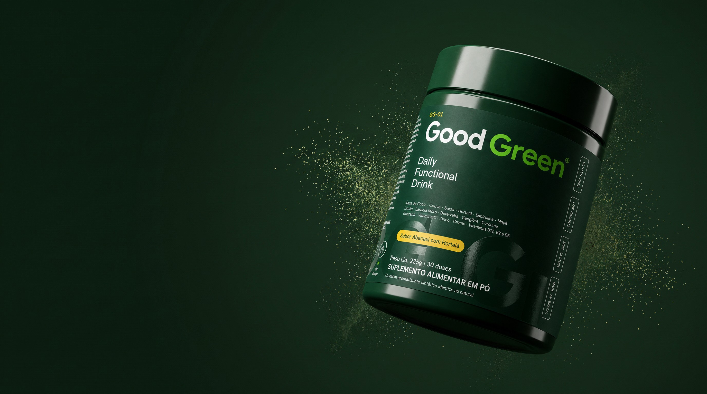

Ciência · IngredientesTudo o que vai
Tudo o que vai
em cada dose.
Ingredientes vegetais, vitaminas e minerais, com a quantidade de cada um na tabela.


Ingredientes vegetais, vitaminas e minerais, com a quantidade de cada um na tabela.
Toque em um ingrediente para ver os detalhes.
| Vitamina C | 45 mg | 45% VD |
| Vitamina B2 | 1,3 mg | 108% VD |
| Vitamina B6 | 1,3 mg | 100% VD |
| Vitamina B12 | 2,4 mcg | 100% VD |
| Zinco | 7 mg | 64% VD |
| Cromo | 200 mcg | 571% VD |
| Cafeína (do guaraná) | 75 mg | — |
| Fibras alimentares | 2 g | 8% VD |
Maçã em pó, polidextrose, água de coco em pó, couve em pó, salsa em pó, hortelã em pó, guaraná em pó (Paullinia cupana), polpa de limão, espirulina (Arthrospira platensis), gengibre em pó, beterraba em pó, cúrcuma em pó, ácido ascórbico (vitamina C), picolinato de cromo, cianocobalamina (vitamina B12), extrato de laranja moro, riboflavina (vitamina B2), cloridrato de piridoxina (vitamina B6), sulfato de zinco, acidulante ácido cítrico, aromatizante sintético idêntico ao natural de abacaxi com hortelã, edulcorante natural glicosídeos de esteviol, corante natural clorofila e antiumectante dióxido de silício. ALÉRGICOS: CONTÉM DERIVADOS DE PEIXE. NÃO CONTÉM GLÚTEN.